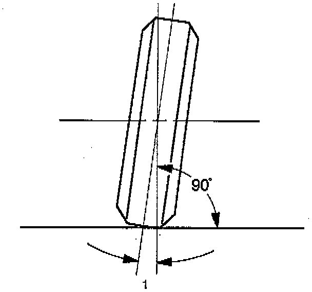

Camber

This illustration is viewed from the front of the vehicle. Camber is the vertical tilting inward or outward of the front wheels. When the wheels tilt outward at the top, the camber is positive (+). When the wheels tilt inward at the top, the camber is negative (-). The amount of tilt measured in degrees from the vertical is called the camber angle (1). If camber is extreme or unequal between the wheels, improper steering and excessive tire wear will result. Negative camber causes wear on the inside of the tire, while positive camber causes wear to the outside.